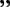

Кэн Канэки (金木かねき 研けん, Kaneki Ken)
Протагонист манги и аниме «Tokyo Ghoul». До начала событий серии Канеки был самым обыкновенным студентом-первокурсником, учившимся в университете Камии на литературном факультете. В результате трагедии на стройке, в которую Кен оказывался вовлечён, он попадает в госпиталь, где его спасают от смерти путём трансплантации органов погибшей Ризе Камиширо. Однако операция повлекла за собой неожиданные для Канеки ужасающие последствия: он становится гибридом человека и гуля.
Кен Канеки: Если бы кто-то по какой-то причине написал историю
со мной в главной роли, то это непременно была бы трагедия.

Внешность
Tokyo Ghoul:
С самого детства Канеки был ничем не примечательным ребёнком с чёрными короткими волосами и с худощавым телосложением. В свободное время он носил обычную, ничем не примечательную одежду, стараясь не выделяться из толпы. Поначалу Канеки ещё не был способен управлять своим какуганом, расположенным слева, и поэтому скрывал его под белой медицинской повязкой. Аналогичная повязка присутствует и в дизайне его маски, но закрывает уже правый глаз и состоит из кожи. На безгубой ухмылке с обнажёнными в оскале искуственными зубами предусмотрена застёжка-молния, отчего рот маски можно в любой момент расстегнуть для приёма пищи. Болты на шее в сочетании с тем фактом, что Канеки является искусственным гулем, дают ему некую схожесть с Франкенштейном.
После длившихся на протяжении десяти дней пыток Ямори волосы Канеки седеют (белеют), а ногти в результате непрерывной регенерации его пальцев становятся тёмными. Спустя полгода после освобождения Канеки успевает нарастить мышечную массу за счёт постоянных тренировок и поедания других гулей. Перед запланированными сражениями он надевает личную боевую форму, представляющую собой чёрный облегающий костюм, обладающий практичностью и устрашающим дизайном, учитывающим расположение его какухо для комфортного высвобождения кагуне.
Tokyo Ghoul:re
Сасаки Хайсе обладает крепким телосложением, а окрас его волос становится смешанным (на макушке корни волос имеют чёрный окрас, по мере роста вытесняющий седину). Ранее серые глаза потемнели, а к ногтям вернулся нормальный цвет. Как и остальные следователи CCG, он большую часть времени одет в стандартный строгий костюм, включающий в себя пиджак, рубашку, галстук, брюки и ботинки, в то время как дома предпочитает носить футболки и шорты. Приступая к выполнению миссии Хайсе надевает белое пальто поверх своей униформы и иногда носит с собой портфель.
Личность
Tokyo Ghoul
Начало
Кен Канеки: Лучше страдать самому, чем причинять
боль другим. Добрым людям для счастья хватает и этого.
Канеки — скромный и замкнутый молодой человек с одним-единственным близким другом в лице Хидэ. Обычно он тратит своё время на чтение книг, преимущественно новелл. Любимым писателем Канеки является Такацуки Сен, однако при этом Кен признает, что стиль написания книг у этого литератора довольно сложен.
Он чрезвычайно мягок и большую часть времени пребывает в оптимистичном настроении. Под влиянием своей матери и собственной скромности он привык брать на себя вину и принимать любое наказание от окружающих, поэтому вместо того, чтобы причинять боль, предпочитает её испытывать сам. Тем не менее, этим недостатком уверенности в себе, как правило, люди зачастую пользовались, предварительно запугивая Канеки.
После обращения в одноглазого гуля он отчаянно цепляется за свою человеческую сторону. Чтобы продолжить жить в мире людей, он начинает работать в Антейку и знакомится с другими гулями. Из-за отсутствия опыта он проявляет интерес к самосовершенствованию и к чтению книг о боевых искусствах, чтобы в случае необходимости защитить и себя, и близких ему людей. Он обеспокоен тем, что является наполовину гулем, и потому отчаянно ищет место, к которому мог бы принадлежать. Если близкие ему люди оказываются под угрозой, Канеки всеми силами попытается их защитить или хотя бы убедиться в том, что вся боль достанется лишь ему одному.
Как выясняется позднее, данная личность была создана самим Канеки в попытке защититься от регулярных побоев от матери, а также здесь всплывает его стокгольмский синдром.
Последствия плена в Аогири
Кен Канеки: Если кто-то угрожает моему миру, с ними произойдёт то же самое,
что и с кофейными зёрнами. Чтобы отобрать хорошие, плохие нужно выкинуть.
После пребывания в плену Аогири в одиннадцатом районе и постоянных пыток от рук садиста Ямори характер Канеки начинает меняться. Он становится безжалостным и жестоким ради защиты своих друзей, при этом сохраняя самообладание. Он больше не боится своей стороны гуля, почти не чувствует боль и во время сражений он становится более хладнокровным и кровожадным. Ради достижения целей готов идти против закона и похищать людей, а во время допроса не отказывается от запугиваний пытками, через которые прошёл сам. Принимая свою натуру гуля, Канеки сдаётся и перестаёт быть «человеком». Несмотря на это, он всё ещё отказывается убивать и пожирать людей, и поэтому ради собственного пропитания охотится на других гулей, представляющих обществу угрозу.
После побега из Аогири Канеки становится более ловким в бою. Он уже не прячется в надежде, что его кто-то спасет, а сам смотрит в лицо своим страхам. Канеки полностью пересматривает свое отношение к знакомым ему людям и больше не пытается скрыться от суровой реальности. В конце концов, он привыкает к тому, что является гулем, и не проклинает свою жизнь, изменившуюся после встречи с Ризе. Канеки больше не считает себя изгоем ни среди людей, ни среди гулей.
Даже после серьёзных перемен в характере Канеки всё ещё способен проявлять мягкость и доброту к тем, о ком заботится, а также в мгновение ока, словно по щелчку, может становиться беспощадным по отношению к своим врагам или к личностям, которым не доверяет (например, Цукияме). Банджо выдвинул гипотезу, что у Канеки во время пребывания в 11-ом районе выработалась некая форма психической нестабильности, которая со временем сломает его психику.
После нападения на лабораторию Кано и нанесения раны Банджо Канеки пытается вернуться к своим истокам и стать прежним, каким он был до плена в Аогири. Он начинает углублённый самоанализ, стремясь вернуть свою человеческую сторону, а также впадает в смятение, запутавшись на своём пути в поисках силы. Канеки ставит перед собой цель разобраться в себе, ради чего обращается за помощью к Йошимуре, Ренджи и Уте.
Каждый раз, когда он испытывает сильный голод или теряет контроль над своим кагуне, его личность начинает расщепляться, отчего его собственное «я» перемешивается с субличностями Якумо Оомори и Ризе Камиширо, поскольку их образы Канеки прочно ассоциировал с натурой гулей.
Tokyo Ghoul:re
Хайсе Сасаки
Хайсе Сасаки: В трудные времена Акира-сан поддерживает меня, и я рад, что могу вот
так разговаривать с Вами. Больше мне ничего не надо… Этого мне достаточно. Я счастлив!
Начав жизнь с чистого листа, Хайсе предстаёт собранной, добродушной персоной. Он показывает себя надёжным, верным и всецело посвящённым делу следователем. Серьёзно относясь к своей работе, Хайсе остаётся в некоторой степени милостивым, поскольку считает, что при отсутствии крайней необходимости следователь не должен убивать гулей, и поэтому чаще всего старается уладить конфликт миром и уговорить противника сдаться. Будучи назначенным на должность наставника отряда Qs, Сасаки уважает и защищает своих подчинённых, проявляя к ним искреннюю заботу. Он без колебаний принимает от старших по званию возлагаемые на его обязанности. Хайсе хорошо кооперируется с коллегами, поскольку предпочитает работу в группе для достижения поставленных CCG целей. В свободное от работы время Хайсе любит читать, а также выдумывать различные каламбуры, которые позволяют ему блеснуть остроумием перед начальницей, Акирой Мадо.
У Сасаки есть привычка чесать затылок, когда о чём-то задумывается или когда чувствует себя неуютно. Кроме того, он по-прежнему неосознанно тянется рукой к подбородку, когда лжёт или что-либо скрывает.
Поскольку Хайсе — мягкосердечная персона, у него часто возникают проблемы с подчинёнными, которые отказываются работать в команде и тем самым выставляют Сасаки перед другими следователями не в самом лучшем свете. Однако Хайсе больше волнует их безопасность, а не его собственная репутация. Кроме того, в отличие от Канеки, который принял свою сторону гуля, Хайсе из страха отвергает её и испытывает к ней отвращение, поскольку боится исчезнуть в том случае, если к нему вернутся воспоминания и прежняя натура. В случаях, когда возникает сильнейший соблазн поддаться подсознательным инстинктам, он вспоминает советы и учения своих наставников, что позволяет ему отвлечься и придаёт храбрости.
Позднее Хайсе начинает испытывать всё больший страх перед своим покрытым тайной прошлым, но, тем не менее, пытается разузнать хоть что-нибудь о своей прошлой жизни. Долгое время он колебался в выборе между своим нынешним положением и истинной натурой, и, в конце концов, выбирает второе, не в силах и дальше жить в страхе и неведении.
Силы и способности
Физиология гуля
Кен унаследовал какухо Ризе, что наделило его способностью использовать её кагуне, аномальной регенерацией и увеличенной физической силой. Поскольку Канеки является гибридом, потенциал его способностей выше, чем у среднестатистического полноценного гуля.
- Ринкаку-кагуне: унаследованный от Ризе кагуне в точности повторял изначальную форму, коей обладал у донора. Будучи представителем ринкаку-типа, Канеки обладает огромной грубой силой, позволяющей наносить серьёзные повреждения противникам. Чешуйчатая структура кагуне при ударах спиливает плоть и Rc-клетки противника подобно напильнику. С течением времени и опытом Канеки базовые формы претерпевали изменения.
- 3 щупальца: исходный вид кагуне, контроль над которыми давался Канеки с трудом. Уже на тот момент его мощи было достаточно, чтобы уничтожить куинке или пронзить тело крепкого гуля. Ниже приведены наиболее отчётливые формы, коими обладал кагуне Канеки до того момента, пока Кен не научился свободно контроливать форму высвобождаемой массы.
- 4 щупальца: после того, как ему удалось вырваться из плена Якумо Оомори, Кен придаёт кагуне форму уже четырёх щупалец с более острыми очертаниями. Мощь значительно увеличивается за счёт грубой силы, способной не только наносить серьёзные разрушения окружению, но и рассекать плотную структуру какуджа-кагуне. Примером является какуджа-рука Ямори, которая в ходе сражения была отсечена кагуне Канеки.
- 6 щупалец: в ходе битвы в лаборатории Кано обезумевший Кен, когда его какуджа-какухо был повреждён, на смену ему высвобождает уже шесть ринкаку-щупалец. Мощь атак возрастает до такой степени, что одновременный удар способен разрушить коукаку-какуджа-броню, использовавшуюся при создании «Араты».
- Трёхпалая рука: усиленная форма кагуне, образованная в результате плотного переплетения трёх ринкаку-щупалец. Используется для нанесения наиболее тяжёлых ударов, способных пробить оборону противника. Позднее предстаёт в более крупной форме с увеличенными когтями, предназначенными для разрывания тела противника.
- Пружина: одному из своих щупалец Канеки способен придать спиралевидную форму, имитирующую кагуне Шу Цукиямы. Пружина используется для усиленных прыжков, акробатических манёвров во время боя и для усиления атак кинетической энергией.
- 8 рук-щупалец: данная форма проявилась во время приступа психической настабильности Канеки в V14, когда Кишо Арима нанёс ему первое ранение в голову. В безумном порыве кагуне-конечности хаотично крушили всё вокруг; мощности ударов хватило даже на то, чтобы серьёзно повредить опорные колонны.
- Спиралевидный меч: единожды применявшаяся форма, отдалённо напоминающая кагуне Шу Цукиямы. Использовалась во время сражения со Змеем. Увеличив кагуне в размерах и придав ему форму спирали с заострённым концом, Хайсе с лёгкостью отсёк половину бикаку-хвоста своего противника.
- Подземные шипы: единожды применяемая форма. Использовалась Сасаки в бою со Змеем; Хайсе вонзает щупальца в асфальт, чтобы затем высвободить их под ногами противника и снизу нанести многочисленные ранения.
- Переплетение рук: в данной форме кагуне высвободился после возвращения памяти Канеки. При помощи переплетения кагуне-конечностей Кен нанёс Канае критические повреждения, лишившие её способности продолжать бой.
- Плотоядные щупальца: после того, как Кен съел немалую часть какухо Одноглазой Совы, его кагуне потерял чётко выраженную форму. Во время его службы в качестве кандитата в особый класс это были щупальца с расположенными на них глазами, зубастыми ртами и острыми отростками.
- Крылья бабочки: форма кагуне Канеки, образовавшаяся после его извлечения из формы Дракона. Rc-клетки после высвобождения принимают вид массивных крыльев, растущих из спины.
- Крестообразные клинки: кагуне Кена формируются в несколько массивных крестообразных мечей, соединённых с телом щупальцами и наделённых высокой разрушительной мощью. Благодаря способности щупалец растягиваться, диапазон атаки мечами достаточно высок, что позволяет Кену атаковать противника как на ближней, так и на средне-дальней дистанции.
- Раздвоенный хвост: одна из дополнительных форм кагуне Кена, которая является копией кагуне Нишики Нишио.
- Сегментированные клинки: одна из дополнительных форм кагуне Кена, которая принимает вид двух составных лезвий, состоящих их многочисленных сегментов.
- Ринкаку-какуджа: в результате практикуемого Канеки каннибализма у него развился какуджа-кагуне, способный наносить серьёзнейшие повреждения. Поскольку поначалу его какуджа был несовершенным, Кен каждый раз при его использовании терял над собой контроль и впадал в состояние берсерка, атакуя без разбору всех, кто встанет на его пути: и врагов, и друзей. При этом его речь становится обрывистой и бессвязной; он говорит о себе в разном роде, а также неосознанно озвучивает самые сокровенные мысли. На протяжении времени форма какуджа-кагуне неоднократно менялась.
- Хвост-сколопендра: самая первая форма кагуне в виде туловища сколопендры с многочисленными заострёнными лапками. Способна не только с лёгкостью рассекать тела гулей, но и разрушать окружение, оставляя глубокие борозды на бетоновых стенах и на полу.
- Парные хвосты-сколопендры: вторая, более продвинутая версия какуджа-кагуне, отличающаяся лишь количеством хвостов. Пробивная мощь изменений не претерпевает.
- Массивная трёхпалая рука: переходная форма, проявившаяся спустя длительный отрезок времени во время сражения с Кишо Аримой в Кокурии. Представляет собой бронированную лапу с тремя вытянутыми пальцами-когтями, способными заблокировать даже атаку куинке ранга SSS.
- Сдвоенный меч и броня: наиболее развитая какуджа-форма, проявившаяся в ходе сражения с Аримой в Кокурии. Торс Кена покрывает какуджа-броня, за плечами возникает подобие оперения из лезвий, а на месте правой руки появляются два массивных клинка, расположенных под острым углом. В данном состоянии Канеки уже полностью сохраняет рассудок и больше не поддаётся безумию.
- Гигантский хвост-сколопендра: продвинутая версия хвоста-сколопендры, размеры которой увеличиваются в несколько раз. Кроме того, сохраняется какуджа-броня, защищающая тело носителя от тяжелейших атак.
- Одноглазый Король: нестабильная какуджа-форма, которая покрывает тело Канеки прочной бронёй, видоизменяет его правую руку в массивную лапу со множеством когтей-лезвий, а также оснащает множеством щупалец и клинков, произрастающих из плеч, лопаток и спины. Какуджа-маска приобретает смешанный вид, включая как элементы от маски «сколопендры» (глаз посередине и вытянутый вырост—«хоботок»), так и новые: нижняя часть лица превращается в вытянутую пасть со множеством острых зубов. Тактика боя в данной форме неизвестна, поскольку Канеки при её использовании теряет над собой контроль и после сражения не может вспомнить ход битвы. Тем не менее, Кичимура Вашу сравнивает Кена, сражавшегося в данной какуджа-форме, с разъярённым демоном.
- Дракон: какуджа-форма Канеки после поедания сотни следователей-оггай. Условно обозначается как «Дракон», поскольку внешность данного существа трудно поддаётся описанию: Кен превращается в чудовищных размеров существо, целиком состоящее из какуджа-кагуне. Его габариты настолько велики, что способны целиком заполнить улицы города, а также в длине превзойти небоскрёб (так, Дракон в состоянии обвиться вокруг Токийского муниципалитета, достигнув его крыши). Туловище совмещает в себе одновременно черты сколопендры (сегментарное тело и щупальца-лапы) и дракона (гигантская голова с широкой пастью со множеством крупных зубов). Всё туловище покрывают бесчисленные глаза (подразумевающие скопления Rc-клеток), рты, конечности, щупальца и копии съеденных оггай, образованные из кагуне (из некоторых отверстий в самом деле сыплются тела-двойники). Бронированный покров Дракона способен выстоять против выстрела из танкового орудия, а вес — с лёгкостью раздавить бронетехнику. Размеры чудовища позволяют ему одновременно присутствовать как на поверхности Токио, так и в 24-ом районе. Однако, информации на счет того, контролирует ли Кен данную форму какуджи нет. После появления чудовища в Токио жертвы среди гражданского населения, следователей по гулям и военных исчисляются сотнями.
- Отпрыски: в состоянии Дракона Канеки способен выпрастывать субстанцию из Rc-клеток, из которых формируются многочисленные монстры-гуманоиды с кагунеобразным туловищем и зубастой пастью вместо лица. Количество существ исчисляется сотнями; все они агрессивны к окружающим формам жизни и нападают на всех без разбору, кроме своих сородичей. Однако они уязвимы перед куинке, что позволяет без труда их уничтожить путём обезглавливания. Несмотря на это, за монстрами остаётся численное преимущество над следователями и гулями.
- Драконид: какуджа-форма Кена после извлечения из биомассы Дракона. Его тело покрывает броня, а на торсе появляются очертания драконьей морды. За плечами Rc-клетки принимают вид нескольких пар крупных мышечных лезвий. Активация какуджа-формы сопрвождается появлением крестообразных клинков, количество которых варьируется от четырёх до десяти.
Мини-галерея:
Дизайн в манге:

Хвост-сколопендра (полукакуджа)

Парные хвосты-сколопендры (полукакуджа)

Парные хвосты-сколопендры (полукакуджа)

Переходная какуджа-форма

Обновлённая форма какуджа

Сдвоенный меч

Гигантский хвост-сколопендра

Какуджа-форма Одноглазого Короля
Обновлённая форма какуджа

Дракон — мутация

Дракон — какуджа-кагуне Канеки заполняют улицы Токио

Дракон — габариты в сравнении с Токийским муниципалитетом

Дракон — какуджа-кагуне с многочисленными глазами и пастями

Дракон — голова и пасть

Дракон – выброс Rc-субстанции и формирование отпрысков

Дракон – отпрыски

Драконид в окружении крестообразных клинков

Драконид (вид сзади)

Драконид — дальнобойная атака клинками
Дизайн в аниме:

Парные хвосты-сколопендры (полукакуджа)

Парные хвосты-сколопендры (полукакуджа)

Четыре ринкаку-щупальца и хвосты-сколопендры

Хвост-сколопендра Канеки (полукакуджа)
- Сверхчеловеческая сила: гули обладают повышенной физической силой, значительно превосходящей человеческую. Ею овладел и Канеки после операции по пересадке какухо. Кен уже в самом начале своего развития был способен голыми руками нейтрализовать среднестатистических полноценных гулей, превосходивших его ростом и численностью. Кроме того, Канеки в состоянии вырвать из асфальта фонарный столб, чтобы затем использовать в качестве оружия. Велика и мощь его бросков; во время битвы с Аято Кен швырнул оппонента в пол с такой силой, что тот пробил собой несколько этажей одного из зданий в 11-ом районе. Помимо этого Кен способен без усилий бросать и удерживать вытянутой рукой гуля, превосходящего его в весе и росте.
- Сверхчеловеческая скорость: во время сражения с Шинохарой Канеки продемонстрировал огромную скорость бега, которая позволяла ему бегать по стенам и благодаря которой следователь был не в состоянии отследить его перемещение. Во время сражения с Аримой в V14 Кен был в состоянии уклониться от разрядов Наруками Аримы, а спустя несколько лет и от хаотичных ударов кагуне Канае, обезумевшей от боли.
- Cверхчеловеческая стойкость: тело Канеки обладает повышенной прочностью, выделяющей его даже среди гулей. Он неуязвим для обычного холодного или огнестрельного оружия. В ослабленном состоянии Кен выдерживает многочисленные удары превосходящего по силам противника. Также Канеки отделывается некритическими повреждениями при ударах о предметы окружения, как то мебель в кофейне Антейку. При получении сильного удара, отбрасывающего Кена в сторону, его тело способно пробить бетонную стену, отделавшись незначительными ранениями.
- Сверхчеловеческий болевой порог: подвергнутый пыткам Ямори Канеки на протяжении десяти дней испытывал нечеловеческую боль. Зверские истязания не прошли даром и закалили его, притупив болевые ощущения. Вновь обретя свободу, в сражениях Кен больше не обращал внимания на боль, если только рана не была слишком обширной и критической. Так, он спокойно переносил открытые переломы и колотые раны. Завышенный болевой порог не распространялся на Хайсе Сасаки; лишённый воспоминаний Кен снова страдал от получаемых ранений в бою с Такизавой на аукционе или с Канае на крыше Lunatic Eclipse. Позднее же, когда к нему возвращается память, его болевой порог снова завышается, что позволяет Канеки спокойно переносить как неоднократную потерю конечностей, так и многочисленные раны от Кишо Аримы, когда тот с огромной скоростью кромсал его тело в Кокурии.
- Сверхчеловеческая регенерация: гули обладают повышенным исцеляющим фактором, в разы превосходящий таковой у людей. С течением времени на теле гуля в зависимости от его рациона и частоты питания затягиваются любые раны; мелкие царапины, ушибы и порезы залечиваются моментально. Возможно даже восстановление утерянных частей тела, однако это, как правило, занимает более длительный срок.
- Аномальная регенерация: с самого начала регенерация Канеки считалась аномальной даже среди гулей. Сперва это проявлялось в быстром исцелении сквозных ранений, полученных в сражениях и в плену Древа Аогири; затем она проявилась в ускоренном отращивании пальцев на ногах во времена десятидневных пыток Ямори. С течением времени и накоплением силы и опыта регенеративные способности Канеки лишь усиливались. Позднее он был в состоянии исцелить открытые переломы рук и сквозные ранения. Пиком регенерации стали обширная рана, полученная в схватке с Котаро Амоном, два критических сквозных повреждения мозга и уничтоженные глаза в бою с Кишо Аримой: каждое из этих увечий спустя промежуток времени отрегенерировалось, не оставив и следа. На этом развитие не остановилось; следующей демонстрацией самовосстановления стала битва с Аримой в Кокурии, в ходе которой Кишо безостановочно кромсал тело Кена, который в свою очередь успевал молниеносно регенерировать потерянные части тела. Несмотря на это, Кен по неизвестным причинам не в состоянии восстановить отсечённые конечности; вместо этого он заменяет их кагунеобразной структурой. Позднее Канеки всё же находит способ возвращать восстановленным частям тела первоначальный вид.
Мини-галерея:

Сверхчеловеческая регенерация

Аномальная регенерация

Регенерация рук
- Манипуляция кагуне: после столкновения с Это Кен окончательно освоил свой кагуне, силой мысли придавая ему любую форму по своему усмотрению. Это избавило его от необходимости прибегать лишь к базовым формам и расширило тактические возможности в бою. Так, он создавал протезы на место потерянных конечностей, вид и функции которых также мог изменять по своему усмотрению; в сражении с Аримой прибегал к использованию ловушек и массивных решётчатых конструкций с целью ограничить подвижность противника. Кроме того, позднее Кен демонстрирует способность создавать из отделяемых фрагментов своего кагуне оружие (например, меч, напоминающий куинке Юкимура 1/3).
Мини-галерея:

Рука-кагуне

Кагуне-клетка

Западня из ринкаку-щупалец

Копия Юкимуры
Неустановленная физиология
После того, как его тело было извлечено из биомассы Дракона и изучено специалистами, было обнаружено, что анатомия Канеки претерпела значительные изменения. Его туловище приобрело вид кагунеобразной структуры, а в его организме образовалось множество органов неизвестного назначения, что затруднило оказание ему медицинской помощи. На данный момент известно не так много преимуществ, которые приобрело тело Кена после мутации.
- Иммунитет к Rc-вирусу: изменённая анатомия Канеки наделила его устойчивостью к яду, распространяющемуся воздушно-капельным путём и заражающим всех вдохнувших синдромом гиперсекреции Rc-клеток.
Мини-галерея:

Мутировавшее туловище Канеки
Боевая подготовка
Изначально Канеки предстаёт слабым и непригодным к сражениям; его тело не обладает ни развитыми мышцами, ни гибкостью. У него плохие рефлексы, что отражает его ужасные спортивные данные тех времён, когда он ещё был человеком. Несмотря на это, он показал себя весьма адаптивным и быстро обучающимся бойцом. За довольно короткий период времени он набрался опыта и стал достойным противником, сумевшим одолеть большинство своих врагов-гулей.
- Развитая дедукция во время столкновения с противником, будь то гуль или следователь, Канеки тщательно планирует свои действия, чтобы быстро и эффективно одолеть оппонента. Он читает врага, словно открытую книгу, предугадывая его действия, прекрасно разбирается в анатомии и знает, куда стоит ударить, чтобы застать противника врасплох или вывести его из обороны.
- Боевые искусства: став членом Антейку, Канеки начал тренироваться с Тоукой и Ренджи Йомо рукопашному бою. После освобождения из плена Ямори он углубился в изучение различных техник по книгам, позднее отрабатывая приёмы, захваты и броски в тренировочном зале. Нередко ему составляли компанию Шу Цукияма, с которым он устраивал спарринги, и Казуичи Банджо, которого Канеки старался обучить тому, что знал сам.
- Фехтование: поскольку его куинке Юкимура обладал формой длинного клинка, Хайсе был вынужден обучиться обращению с мечом. Тренировками следователя-полугуля занимался лично Кишо Арима, и порой занятия длились до полного изнеможения ученика. В результате жестоких тренировок Сасаки успешно освоил меч и научился с лёгкостью рассекать и пронзать им тела гулей. В ходе битвы Хайсе демонстрирует и способность умело сочетать куинке с кагуне, тем самым повышая свою боевую эффективность.
- Юкимура 1/3: полученный от Аримы куинке типа коукаку представляет собой длинный клинок без эфеса. Хайсе в обращении с ним демонстрирует высокое мастерство, без особых усилий легко рассекая тела гулей. Юкимура был поврёжден в бою с Сейдо Такизавой, но позднее отремонтирован.
Мини-галерея:

Канеки нейтрализует Гиру

Боевая стойка Канеки

Юкимура 1/3
Цитаты
Tokyo Ghoul
«Если бы кто-то по какой-то причине написал историю со мной в главной роли, то это непременно была бы трагедия.»
Обращаясь к Тоуке: «Знаешь, если бы ты умерла, то мне было бы грустно…»
Обращаясь к Амону: «Умоляю, не делайте из меня убийцу!»
«Этот мир неправилен.»
«Ошибаюсь не я. Ошибается этот мир.»
«Не будет жалости к тому, кто попытается забрать у меня дом.»
«Мама была очень доброй. Она была замечательной: ходила на работу, следила за домом, ни с кем не ругалась, никому не причиняла неприятностей и была одинакова добра ко всем. Мама была моей гордостью. «Кен, испытывать горечь — это нормально. Добрым людям для счастья хватает и этого». Лучше страдать самому, чем причинять боль другим. Добрым людям для счастья хватает и этого — так она меня учила.»
Обращаясь к Мадам А: «Вы знаете, что слышит человек, если засунуть ему в ухо живую сколопендру? Если не будете врать, то избавите от необходимости просветить Вас в этом вопросе.»
При первом использовании полукакуджа: «Мама, мама, эээй, я так искажён… Я? Я? Яяя… Я защищу всех.»
«Сколько я ни пытался за счёт ненависти пробудить свою волю к борьбе, сильнее грусти, сильнее ярости, другое чувство росло во мне. Отчаяние.»
«Почему красота у меня ассоциируется скорее со смертью, чем с жизнью?»
«Моментально распознаёт, что у человека на душе, но притворяется, что ничего не знает, чтобы не задеть меня.»
«С того самого дня, когда я осознал, что стал гулем, я решил отбросить свою слабость, чтобы защитить важных для меня людей. В этом мире сильный пожирает слабого. Сильный ест. А кто сильный? Я.»
«Я думаю, что если этот мир неправилен, тогда его искажает… всё, что существует в нём.»
«Хоть нам и грустно, но мы всё равно должны жить дальше, даже с этой грустью.»
«Это не я ел гулей. Это они пожирали меня.»
Обращаясь к самому себе: «Как же мы уродливы… Всё нормально. Ты ведь… Спасал меня бесчисленное количество раз. Ты сражался вместо слабого меня. Я совсем не сержусь. Спасибо тебе за всё, что ты сделал.»
«Я видел это. В ту ночь, над смертью Ризе-сан, смеялся клоун.»
Tokyo Ghoul:re
Будучи Хайсе обращаясь к Муцуки: «Похоже, мне придётся показать этим детишкам, кто такой серьёзный Сасаки. Вы ещё увидите, малышня, серьёзность Сасаки… САСАРЬЁЗНОСТЬ!»
Канеки, обращаясь к Хайсе (в галлюцинации Сасаки): «Ты слаб, Хайсе… Посмотри на меня, не будь таким холодным… Тебе ведь нужно это, да? Просто прими меня… Давай, давай, давай, давай, давай!»
Хайсе, обращаясь к Канеки: «Я не позволю тебе поглотить меня.»
Обращаясь к своему отряду: «Вы, следователи по гулям, должны были бежать, даже если бы это стоило вам ног или рук! Пока вы живы, у вас всегда будет второй шанс. Но всё закончится, если вы погибнете.»
Сам себе (по поводу сомнения в своей принадлежности к CCG): «Нормально ли это, что я здесь сражаюсь?»
Обращаясь к Ариме: «В трудные времена Акира-сан поддерживает меня, и я рад, что могу вот так разговаривать с Вами. Больше мне ничего не надо… Этого мне достаточно. Я счастлив!» «Хватит с меня снов.»
Обращаясь к Это: «Жалкая здесь только ты. Сдохни.»
Если ты теряешь что-то в этом мире, то это из-за недостатка таланта. Хочешь что-то проклинать – проклинай собственную слабость.
«Точно. Я совсем ребёнок. Терпеть не могу взрослых. Я им не доверяю.»
Обращаясь к Фуруте: «Жаль терять время. Нам некогда ждать, пока одобрят каждую мелочь.»
Обращаясь к Хинами: «Я спасу тебя, Хинами-чан. А затем умру от рук Аримы-сана.»
«Едва не умерев, я наконец-то понял, насколько искажённую картину я видел. Ризе-сан, Хиде... Они всегда были лишь тем, что я сам породил.»
Обращаясь к Тоуке: «Ты всегда можешь называть меня Канеки, Тоука-чан.»
«Гули и люди способны понять друг друга. Это доказывает хотя бы тот факт, что я, некогда бывший человеком, сейчас стою перед вами.»
«Зачастую именно тогда, когда всё хорошо и идёт по плану, у тебя выбивают почву из-под ног. Вспоминая об этом, я понимаю, что так было с самого начала. Сколько раз я представлял себе, что не встретился с ней взглядом в тот день... Жить — значит принимать одно решение за другим. Если бы я сделал то или не сделал это. Выбрал иначе, действовал по-другому. Если бы не сдался тогда и если бы в тот момент нашёл силы остановиться. Что годами обдумывай, что поступай бездумно, результаты всё равно будут видны почти моментально. Не важно, насколько они отвратительны или зловонны... У меня нет выбора, кроме как принять их. Одного единственного выбора достаточно, чтобы полностью сбить тебя с пути. А с неправильной дороги назад не вернуться. Однажды, когда ты будешь устало плестись вперёд, ты прошепчешь: «Всё должно было быть по-другому».»
«Я рад, что заметил странность. Что вернулся вовремя. Правда, я не уверен, кого мне благодарить за это. В этот раз я смогу... Я защищу. Я смогу защитить. Всё это время я жил ради этого момента. Всё верно... Жил...»
«В битве за Антейку... Что вообще дало моё участие? Кто с этого выиграл? В конце концов, управляющий погиб, а Антейку был разрушен. И друзья разбежались кто куда. Если бы я только послушал и сбежал со всеми, в итоге я бы просто работал в новом кафе вместе с Йомо-саном и остальными!»
От лица Хайсе Сасаки остальным субличностям: «Но... Мне одиноко! Вы все Канеки Кен, поэтому не понимаете меня. Я рад, что встретил куинксов! Я знаю, что мы только притворялись семьёй, но мне они правда стали как дети! Вас всех здесь спасло то, что я их встретил!»
Диалог в сознании Канеки:
— Но это же... Человек. К тому же ребёнок.
— Неважно. Никакой пощады. Я должен уничтожить их.
— Всё, что на моём пути. Всё вокруг. Даже самого себя.
— Предашь ли свои идеалы?
— Если нужно.
— Сможешь убить?
— Убью.
— Что для тебя сейчас важно?
— Ты ведь знаешь. Я... С самого начала знал, что придётся это сделать.
«Я не отступлюсь. Я продолжу двигаться вперёд. Как сколопендра.»
Обращаясь к Ризе: «Я просто... Хотел быть кому-то нужным. С тех пор, как Йошимура-сан угостил мне кофе в Антейку, границы мира сильно расширились. Многие гули стали моими друзьями. И даже когда я стал Хайсе, Арима-сан и Это-сан тоже выбрали меня. Тоука-чан выбрала жизнь рядом со мной. Я начал чувствовать себя нужным. Я был счастлив. Я действительно думал, что у меня было своё место в обоих мирах. Как ты и сказала... Мне плевать на всех. Мне плевать на «что» и «почему». Я думал, что если просто буду сражаться, то стану кому-то нужен. Но... Теперь... Всё бесполезно... Поэтому... Я... Я сделал это...»